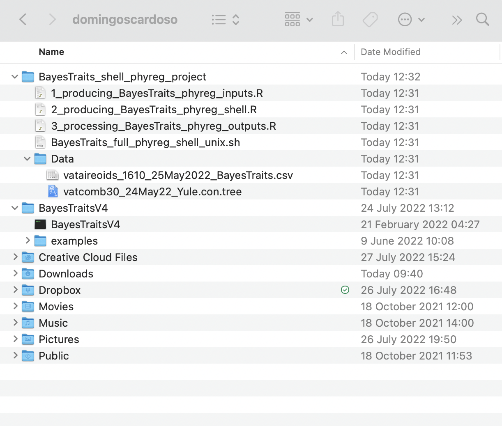
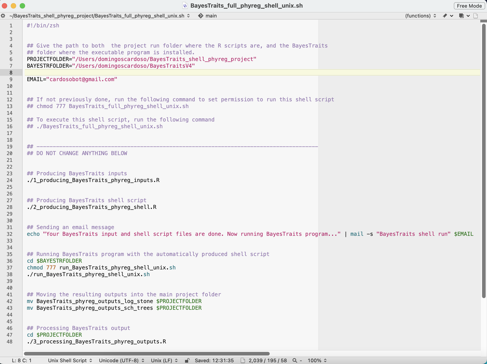
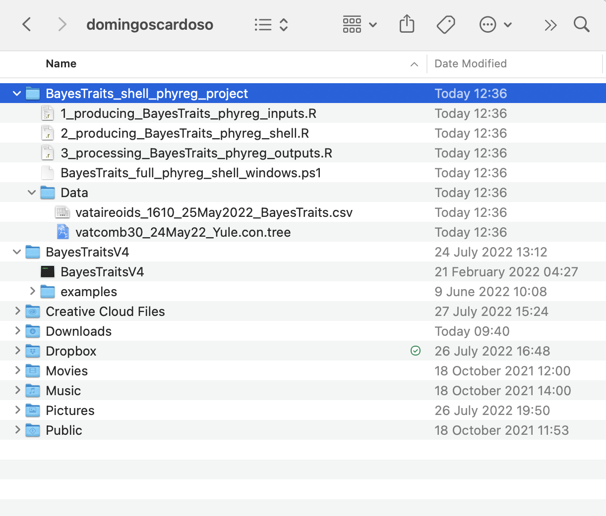
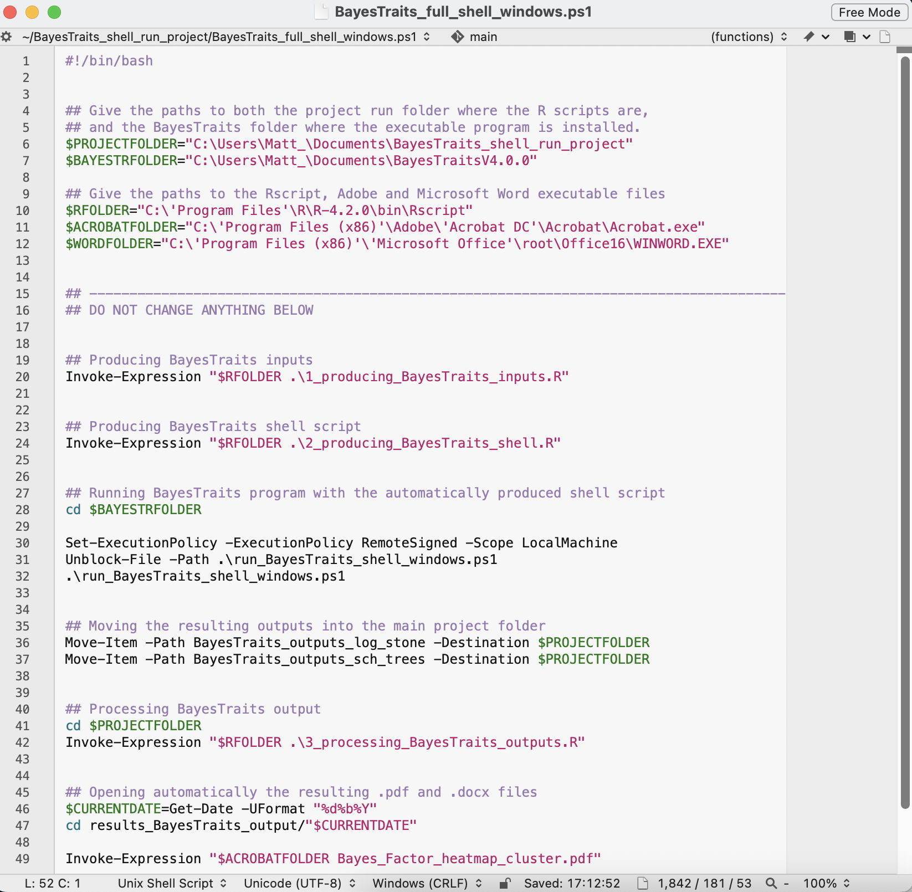

Fully automated regression analysis and log processing with a shell script
Source:vignettes/articles/phyreg_shell_project.Rmd
phyreg_shell_project.Rmd
The main goal of the InNOutBT package is to readily create input data and process output data for Meade & Pagel’s (2022) BayesTraits program.
Here in this article, we show how to use InNOutBT’s function shell.phyreg.proj for a full shell script run and log processing multiple phylogenetic regression analyses with Meade & Pagel’s (2022) BayesTraits program. By reporting a directory path and the computer’s operating system (“unix” or “windows”), this function creates the project folder BayesTraits_shell_phyreg_project with associated example scripts.
The available example of a shell script in Unix or Windows PowerShell helps to fully automatize both the complete BayesTraits regression analyses and processing of the resulting log and stones files, by automatically running the three main InNOutBT functions phyreg.inputs, phyreg.shell, and phyreg.outputs, without directly opening the R or R Studio programs.
Note that the BayesTraits_shell_phyreg_project folder that comes with InNOutBT package was originally used in our recently published specific study on the ecological diversification of the Vataireoid legumes. So, you will have to edit the folder paths and analysis parameters in such example scripts according to your desired regression analyses. See the associated articles on how to set the parameters to create input files with phyreg.inputs for the phylogenetic regression analyses, as well to create the internal shell script with phyreg.shell for the actual BayesTraits runs, and to process the resulting output files with phyreg.outputs. You might also want to see BayesTraits V4.0.0 Manual for further details on each of BayesTraits parameters available for phylogenetic regressions so as to better understand how to set the arguments available in the InNOutBT functions.
Setup
InNOutBT is not on CRAN yet but you can install the latest development version from GitHub:
#install.packages("devtools")
devtools::install_github("DBOSlab/InNOutBT")Creating a Unix shell project folder
The shell.phyreg.proj function is very simple and has only two arguments. By just setting any path in your computer and the argument syst = "unix", you can readily create the project folder BayesTraits_shell_phyreg_project with associate example files (R scripts, shell script, and data folder) for running the phylogenetic regressions of the Vataireoid legumes with macOS Monterey. But then you can easily modify such available scripts for your specific analyses.
library(InNOutBT)
shell.phyreg.proj(dir_create_proj = "/Users/domingoscardoso",
syst = "unix")After running shell.phyreg.proj function, it will readily create the project folder BayesTraits_shell_phyreg_project, a data folder with the input data files vataireoids_1610_25May2022_BayesTraits.csv and vatcomb30_24May22_Yule.con.tree, as well as the main shell script BayesTraits_full_phyreg_shell_unix.sh and R scripts 1_producing_BayesTraits_phyreg_inputs.R, 2_producing_BayesTraits_phyreg_shell.R, and 3_processing_BayesTraits_phyreg_outputs.R.

You should see the associated articles on how to set the parameters to create input files with phyreg.inputs for the phylogenetic regression analyses, as well to create the internal shell script with phyreg.shell for the actual BayesTraits runs, and to process the resulting output files with phyreg.outputs. In these articles, you will find how to fully edit the R scripts 1_producing_BayesTraits_phyreg_inputs.R, 2_producing_BayesTraits_phyreg_shell.R, and 3_processing_BayesTraits_phyreg_outputs.R according to your particular study. Otherwise, if you run the example files with the same parameter settings, you will be able to fully reproduce the analysis of our Vataireoid legume study.
Note that for running the main shell script file BayesTraits_full_phyreg_shell_unix.sh, which performs the full phylogenetic regression analysis and processing of results, you will just need to give the path to both the project run folder BayesTraits_shell_phyreg_project, and the BayesTraits program folder where the executable program is installed. These should be set as the variables PROJECTFOLDER and BAYESTRFOLDER, as shown in the image bellow. Also, if you define your e-mail address at the variable EMAIL, then you will receive an automatic e-mail message when your analyses are finished.

Running the Unix shell script
After using the function shell.phyreg.proj with all the needed parameters, you have to set permission to the main shell script file so as to run automatically all the three R scripts and the phylogenetic regression analyses with BayesTraits program. To do that, please follow the steps below.
1. Open the terminal;
2. Move your current working directory to the project folder BayesTraits_shell_phyreg_project, i.e. the same where you should have the main shell script file BayesTraits_full_phyreg_shell_unix.sh;
3. Execute the following line:
chmod 777 BayesTraits_full_phyreg_shell_unix.sh
4. Then perform the full R and BayesTraits run using the shell script by executing the following line:
./BayesTraits_full_phyreg_shell_unix.sh
Creating a Windows PowerShell project folder
In the shell.phyreg.proj function, you can set any path in your PC and the argument syst = "windows" to readily create the project folder BayesTraits_shell_phyreg_project with associate example files (R scripts, PowerShell script, and data folder) for running the phylogenetic regressions of the Vataireoid legumes with Windows PC. But then you can easily modify such available scripts for your specific analyses.
library(InNOutBT)
shell.phyreg.proj(dir_create_proj = "/Users/domingoscardoso",
syst = "windows")After running shell.phyreg.proj function, it will readily create the project folder BayesTraits_shell_phyreg_project, a data folder with the input data files vataireoids_1610_25May2022_BayesTraits.csv and vatcomb30_24May22_Yule.con.tree, as well as the main PowerShell script BayesTraits_full_phyreg_shell_windows.ps1 and R scripts 1_producing_BayesTraits_phyreg_inputs.R, 2_producing_BayesTraits_phyreg_shell.R, and 3_processing_BayesTraits_phyreg_outputs.R.

You should see the associated articles on how to set the parameters to create input files with phyreg.inputs for the phylogenetic regression analyses, as well to create the internal shell script with phyreg.shell for the actual BayesTraits runs, and to process the resulting output files with phyreg.outputs. In these articles, you will find how to fully edit the R scripts 1_producing_BayesTraits_phyreg_inputs.R, 2_producing_BayesTraits_phyreg_shell.R, and 3_processing_BayesTraits_phyreg_outputs.R according to your particular study. Otherwise, if you run the example files with the same parameter settings, you will be able to fully reproduce the analysis of our Vataireoid legume study.
Note that for running the main PowerShell script file BayesTraits_full_phyreg_shell_windows.ps1 which performs the full phylogenetic regression analyses and processing of results, you will just need to give the path to the project run folder BayesTraits_shell_phyreg_project, the BayesTraits, R, Adobe Acrobat, and Microsoft Office program folders where their corresponding executable programs are installed. These should be set, respectively, as the variables $PROJECTFOLDER, $BAYESTRFOLDER, $RFOLDER, $ACROBATFOLDER, and $WORDFOLDER, as shown in the image bellow:

Running the Windows PowerShell script
After using the function shell.phyreg.proj with all the needed parameters, you have to set permission to the main PowerShell script so as to run automatically all the three R scripts and the phylogenetic regression analyses with BayesTraits program. To do that, please follow the steps below, but you may also want to find further information on how to use Windows PowerShell.
1. Open PowerShell as Administrator;
2. Move your current working directory to the project folder BayesTraits_shell_phyreg_project, i.e. the same where you should have the main shell script file BayesTraits_full_phyreg_shell_windows.ps1;
3. Execute the following line and choose option [Y]Yes;
Set-ExecutionPolicy -ExecutionPolicy RemoteSigned -Scope LocalMachine
4. Execute the following line:
Unblock-File -Path .\BayesTraits_full_phyreg_shell_windows.ps1
5. Then perform the full R and BayesTraits run using the PowerShell script by executing the following line:
.\BayesTraits_full_phyreg_shell_windows.ps1